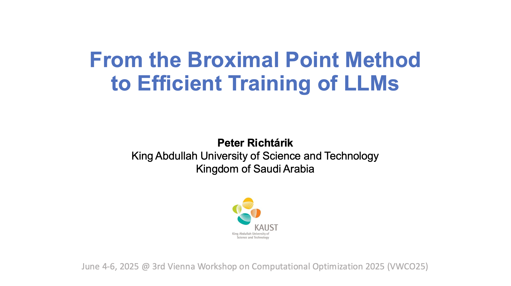
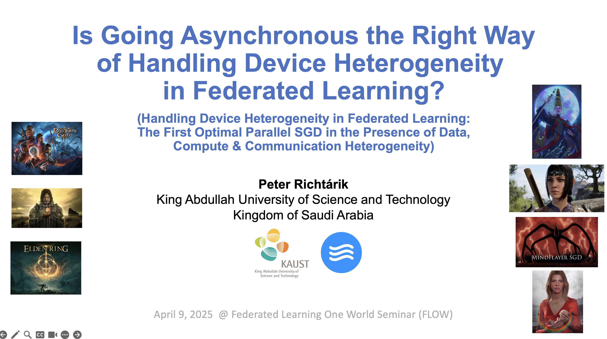

October 13, 2025
FLTA @ Dubrovnik, Croatia
I am in Dubrovnik, Croatia, attending The 3rd IEEE International Conference on Federated Learning Technologies and Applications (FLTA 2025), organized by Feras M. Awaysheh (Tartu, Estonia). Together with Sebastián Ventura, I am the General Chair of the conference. On October 15, I will give the opening keynote talk entitled "Handling Device Heterogeneity in Federated Learning: First Optimal Parallel SGD Methods in the Presence of Data, Compute and/or Communication Heterogeneity".October 12, 2025
New Paper
New paper out: "Second-order Optimization under Heavy-Tailed Noise: Hessian Clipping and Sample Complexity Limits" - joint work with Abdurakhmon Sadiev and Ilyas Fatkhullin.Abstract: Heavy-tailed noise is pervasive in modern machine learning applications, arising from data heterogeneity, outliers, and non-stationary stochastic environments. While second-order methods can significantly accelerate convergence in light-tailed or bounded-noise settings, such algorithms are often brittle and lack guarantees under heavy-tailed noise -- precisely the regimes where robustness is most critical. In this work, we take a first step toward a theoretical understanding of second-order optimization under heavy-tailed noise. We consider a setting where stochastic gradients and Hessians have only bounded p-th moments, for some p ∈ (1,2], and establish tight lower bounds on the sample complexity of any second-order method. We then develop a variant of normalized stochastic gradient descent that leverages second-order information and provably matches these lower bounds. To address the instability caused by large deviations, we introduce a novel algorithm based on gradient and Hessian clipping, and prove high-probability upper bounds that nearly match the fundamental limits. Our results provide the first comprehensive sample complexity characterization for second-order optimization under heavy-tailed noise. This positions Hessian clipping as a robust and theoretically sound strategy for second-order algorithm design in heavy-tailed regimes.
October 8, 2025
Teaching at Saudi Aramco, Dhahran
I arrived to Dhahran. During October 9-12, I will be teaching the first half of "Introduction to Machine Learning" for a cohort of Saudi Aramco employees enrolled in the KAUST Master in Data Science program. My TAs are my PhD students Grigory Malinovsky and Igor Sokolov.October 2, 2025
New Paper
New paper out: "Drop-Muon: Update Less, Converge Faster" - joint work with Kaja Gruntkowska, Yassine Maziane, and Zheng Qu.Abstract: Conventional wisdom in deep learning optimization dictates updating all layers at every step-a principle followed by all recent state-of-the-art optimizers such as Muon. In this work, we challenge this assumption, showing that full-network updates can be fundamentally suboptimal, both in theory and in practice. We introduce a non-Euclidean Randomized Progressive Training method-Drop-Muon-a simple yet powerful framework that updates only a subset of layers per step according to a randomized schedule, combining the efficiency of progressive training with layer-specific non-Euclidean updates for top-tier performance. We provide rigorous convergence guarantees under both layer-wise smoothness and layer-wise (L0,L1)-smoothness, covering deterministic and stochastic gradient settings, marking the first such results for progressive training in the stochastic and non-smooth regime. Our cost analysis further reveals that full-network updates are not optimal unless a very specific relationship between layer smoothness constants holds. Through controlled CNN experiments, we empirically demonstrate that Drop-Muon consistently outperforms full-network Muon, achieving the same accuracy up to 1.4x faster in wall-clock time. Together, our results suggest a shift in how large-scale models can be efficiently trained, challenging the status quo and offering a highly efficient, theoretically grounded alternative to full-network updates.
October 1, 2025
New Paper
New paper out: "Non-Euclidean Broximal Point Method: A Blueprint for Geometry-Aware Optimization" - joint work with Kaja Gruntkowska.Abstract: The recently proposed Broximal Point Method (BPM) [Gruntkowska et al., 2025] offers an idealized optimization framework based on iteratively minimizing the objective function over norm balls centered at the current iterate. It enjoys striking global convergence guarantees, converging linearly and in a finite number of steps for proper, closed and convex functions. However, its theoretical analysis has so far been confined to the Euclidean geometry. At the same time, emerging trends in deep learning optimization, exemplified by algorithms such as Muon [Jordan et al., 2024] and Scion [Pethick et al., 2025], demonstrate the practical advantages of minimizing over balls defined via non-Euclidean norms which better align with the underlying geometry of the associated loss landscapes. In this note, we ask whether the convergence theory of BPM can be extended to this more general, non-Euclidean setting. We give a positive answer, showing that most of the elegant guarantees of the original method carry over to arbitrary norm geometries. Along the way, we clarify which properties are preserved and which necessarily break down when leaving the Euclidean realm. Our analysis positions Non-Euclidean BPM as a conceptual blueprint for understanding a broad class of geometry-aware optimization algorithms, shedding light on the principles behind their practical effectiveness.
October 1, 2025
New Paper
New paper out: "Error Feedback for Muon and Friends" - joint work with Kaja Gruntkowska, Alexander Gaponov, and Zhirayr Tovmasyan.Abstract: Recent optimizers like Muon, Scion, and Gluon have pushed the frontier of large-scale deep learning by exploiting layer-wise linear minimization oracles (LMOs) over non-Euclidean norm balls, capturing neural network structure in ways traditional algorithms cannot. Yet, no principled distributed framework exists for these methods, and communication bottlenecks remain unaddressed. The very few distributed variants are heuristic, with no convergence guarantees in sight. We introduce EF21-Muon, the first communication-efficient, non-Euclidean LMO-based optimizer with rigorous convergence guarantees. EF21-Muon supports stochastic gradients, momentum, and bidirectional compression with error feedback-marking the first extension of error feedback beyond the Euclidean setting. It recovers Muon/Scion/Gluon when compression is off and specific norms are chosen, providing the first efficient distributed implementation of this powerful family. Our theory covers non-Euclidean smooth and the more general (L_0,L_1)-smooth setting, matching best-known Euclidean rates and enabling faster convergence under suitable norm choices. We further extend the analysis to layer-wise (generalized) smoothness regimes, capturing the anisotropic structure of deep networks. Experiments on NanoGPT benchmarking EF21-Muon against uncompressed Muon/Scion/Gluon demonstrate up to 7x communication savings with no accuracy degradation.
September 27, 2025
New Paper
New paper out: "Local SGD and Federated Averaging Through the Lens of Time Complexity" - joint work with Adrien Fradin and Alexander Tyurin.Abstract: We revisit the classical Local SGD and Federated Averaging (FedAvg) methods for distributed optimization and federated learning. While prior work has primarily focused on iteration complexity, we analyze these methods through the lens of time complexity, taking into account both computation and communication costs. Our analysis reveals that, despite its favorable iteration complexity, the time complexity of canonical Local SGD is provably worse than that of Minibatch SGD and Hero SGD (locally executed SGD). We introduce a corrected variant, Dual Local SGD, and further improve it by increasing the local step sizes, leading to a new method called Decaying Local SGD. Our analysis shows that these modifications, together with Hero SGD, are optimal in the nonconvex setting (up to logarithmic factors), closing the time complexity gap. Finally, we use these insights to improve the theory of a number of other asynchronous and local methods.
September 26, 2025
New Paper
New paper out: "Ringleader ASGD: The First Asynchronous SGD with Optimal Time Complexity under Data Heterogeneity" - joint work with Artavazd Maranjyan.Abstract: Asynchronous stochastic gradient methods are central to scalable distributed optimization, particularly when devices differ in computational capabilities. Such settings arise naturally in federated learning, where training takes place on smartphones and other heterogeneous edge devices. In addition to varying computation speeds, these devices often hold data from different distributions. However, existing asynchronous SGD methods struggle in such heterogeneous settings and face two key limitations. First, many rely on unrealistic assumptions of similarity across workers' data distributions. Second, methods that relax this assumption still fail to achieve theoretically optimal performance under heterogeneous computation times. We introduce Ringleader ASGD, the first asynchronous SGD algorithm that attains the theoretical lower bounds for parallel first-order stochastic methods in the smooth nonconvex regime, thereby achieving optimal time complexity under data heterogeneity and without restrictive similarity assumptions. Our analysis further establishes that Ringleader ASGD remains optimal under arbitrary and even time-varying worker computation speeds, closing a fundamental gap in the theory of asynchronous optimization.
September 18, 2025
Three Papers Accepted to NeurIPS 2025
The following papers from my Optimization and Machine Learning Lab were accepted to NeurIPS 2025, to be held simultaneously in San Diego and Mexico City in December 2025:- Abdurakhmon Sadiev, Peter Richtárik and Ilyas Fatkhullin. Second-order Optimization under Heavy-Tailed Noise: Hessian Clipping and Sample Complexity Limits
- Peter Richtárik, Simone Maria Giancola, Dymitr Lubczyk, Robin Yadav. Local Curvature Descent: Squeezing More Curvature out of Standard and Polyak GD
- Sarit Khirirat, Abdurakhmon Sadiev, Artem Riabinin, Eduard Gorbunov, Peter Richtárik. Error Feedback under $(L_0,L_1)$-Smoothness: Normalization and Momentum
September 16, 2025
Talk at the Mathematics and Applications Colloquium @ KAUST
Today at 4pm I am giving a talk at the Mathematics and Applications Colloquium at KAUST, organized by Jinchao Xu.September 15, 2025
CS Graduate Seminar Talk
Today, I am giving a talk at the CS Graduate Seminar at KAUST: Location: Building 9, Level 2, Room 2325. The talk title is: "From the Ball-Proximal (Broximal) Point Method to Efficient Training of LLMs".September 10, 2025
Talk @ Bielefeld
Today, I am giving a talk at the Stochastic Numerics Seminar at Bielefeld University, Germany.September 8, 2025
Talk @ HDA 2025
I am attending the 10th Workshop on High-Dimensional Approximation (HDA 2025), taking place during September 8-12 in Bonn, Germany. I am giving my keynote talk today.September 4, 2025
AMCS/STAT Graduate Seminar Talk
Today, I am giving a talk at the AMCS/STAT Graduate Seminar at KAUST: Location: Building 9, Level 2, Room 2325. The talk title is: "From the Ball-Proximal (Broximal) Point Method to Efficient Training of LLMs".August 31, 2025
New Paper
New paper out: "Convergence Analysis of the PAGE Stochastic Algorithm for Convex Finite-Sum Optimization" - joint work with Laurent Condat.Abstract: PAGE is a stochastic algorithm proposed by Li et al. [2021] to find a stationary point of an average of smooth nonconvex functions. We analyze PAGE in the convex setting and derive new convergence rates, leading to a better complexity than in the general nonconvex regime.
August 29, 2025
Fall 2025: Teaching 3 Courses & Leading the CS Graduate Seminar
I am back at KAUST. The Fall 2025 semester starts on Sunday, August 31. I am teaching three courses this semester: CS 331 (Stochastic Gradient Descent Methods), CS 332 (Federated Learning) and DSA ??? (Introduction to Machine Learning). In addition, I am leading CS 398 (CS Graduate Seminar).
August 20-27, 2025
ACM AsiaCCS 2025 in Vietnam
I am attending ACM AsiaCCS 2025, taking place in Hanoi, Vietnam. On August 26, I am giving the plenary talk at the International Workshop on Secure and Efficient Federated Learning. This was my first time in Vietnam!
August 5, 2025
New Paper
New paper out: "Bernoulli-LoRA: A Theoretical Framework for Randomized Low-Rank Adaptation" - joint work with Igor Sokolov, Abdurakhmon Sadiev, Yury Demidovich, and Fawaz S Al-Qahtani.Abstract: Parameter-efficient fine-tuning (PEFT) has emerged as a crucial approach for adapting large foundational models to specific tasks, particularly as model sizes continue to grow exponentially. Among PEFT methods, Low-Rank Adaptation (LoRA) (arXiv:2106.09685) stands out for its effectiveness and simplicity, expressing adaptations as a product of two low-rank matrices. While extensive empirical studies demonstrate LoRA's practical utility, theoretical understanding of such methods remains limited. Recent work on RAC-LoRA (arXiv:2410.08305) took initial steps toward rigorous analysis. In this work, we introduce Bernoulli-LoRA, a novel theoretical framework that unifies and extends existing LoRA approaches. Our method introduces a probabilistic Bernoulli mechanism for selecting which matrix to update. This approach encompasses and generalizes various existing update strategies while maintaining theoretical tractability. Under standard assumptions from non-convex optimization literature, we analyze several variants of our framework: Bernoulli-LoRA-GD, Bernoulli-LoRA-SGD, Bernoulli-LoRA-PAGE, Bernoulli-LoRA-MVR, Bernoulli-LoRA-QGD, Bernoulli-LoRA-MARINA, and Bernoulli-LoRA-EF21, establishing convergence guarantees for each variant. Additionally, we extend our analysis to convex non-smooth functions, providing convergence rates for both constant and adaptive (Polyak-type) stepsizes. Through extensive experiments on various tasks, we validate our theoretical findings and demonstrate the practical efficacy of our approach. This work is a step toward developing theoretically grounded yet practically effective PEFT methods.
July 27, 2025
Back at KAUST
I am back at KAUST for a week, after which I'll take a bit of vacation.
June 30, 2025
On my way to Senegal
I am on my way to Mbour, Senegal, where I will give several introductory lectures on Federated Learning at the Machine Learning Summer School (MLSS), organized by Adil Salim and Eugene Ndiaye.
June 25, 2025
Teaching at Saudi Aramco, Dhahran
I arrived to Dhahran. During June 26-29, I will be teaching "Introduction to Optimization" for a cohort of Saudi Aramco employees enrolled in the KAUST Master in Data Science program. My TAs are my PhD students Grigory Malinovsky and Igor Sokolov.
June 16, 2025
Talk at KiNiT
I am in Bratislava, giving a talk at the Kempelen Institute of Intelligent Technologies (KiNiT).
June 4, 2025
Vienna
I am in Vienna, attending the 3rd Vienna Workshop on Computational Optimization 2025 (VWCO25), taking place during June 4-7. I talked about two of our recent papers:

May 19, 2025
New Paper
New paper out: "Gluon: Making Muon & Scion Great Again! (Bridging Theory and Practice of LMO-based Optimizers for LLMs)" - joint work with Artem Riabinin, Egor Shulgin, and Kaja Gruntkowska.Abstract: Recent developments in deep learning optimization have brought about radically new algorithms based on the Linear Minimization Oracle (LMO) framework, such as 𝖬𝗎𝗈𝗇 and 𝖲𝖼𝗂𝗈𝗇. After over a decade of 𝖠𝖽𝖺𝗆's dominance, these LMO-based methods are emerging as viable replacements, offering several practical advantages such as improved memory efficiency, better hyperparameter transferability, and most importantly, superior empirical performance on large-scale tasks, including LLM training. However, a significant gap remains between their practical use and our current theoretical understanding: prior analyses (1) overlook the layer-wise LMO application of these optimizers in practice, and (2) rely on an unrealistic smoothness assumption, leading to impractically small stepsizes. To address both, we propose a new LMO-based method called 𝖦𝗅𝗎𝗈𝗇, capturing prior theoretically analyzed methods as special cases, and introduce a new refined generalized smoothness model that captures the layer-wise geometry of neural networks, matches the layer-wise practical implementation of 𝖬𝗎𝗈𝗇 and 𝖲𝖼𝗂𝗈𝗇, and leads to convergence guarantees with strong practical predictive power. Unlike prior results, our theoretical stepsizes closely match the fine-tuned values reported by Pethick et al. (2025). Our experiments with NanoGPT and CNN confirm that our assumption holds along the optimization trajectory, ultimately closing the gap between theory and practice.
May 18, 2025
New Paper
New paper out: "The Stochastic Multi-Proximal Method for Nonsmooth Optimization" - joint work with Laurent Condat and Elnur Gasanov.Abstract: Stochastic gradient descent type methods are ubiquitous in machine learning, but they are only applicable to the optimization of differentiable functions. Proximal algorithms are more general and applicable to nonsmooth functions. We propose a new stochastic and variance-reduced algorithm, the Stochastic Multi-Proximal Method (SMPM), in which the proximity operators of a (possibly empty) random subset of functions are called at every iteration, according to an arbitrary sampling distribution. Several existing algorithms, including Point-SAGA (2016), Proxskip (2022) and RandProx-Minibatch (2023) are recovered as particular cases. We derive linear convergence results in presence of strong convexity and smoothness or similarity of the functions. We prove convergence in the general convex case and accelerated O(1/t^2) convergence with varying stepsizes in presence of strong convexity solely. Our results are new even for the above special cases. Moreover, we show an application to distributed optimization with compressed communication, outperforming existing methods.
May 13, 2025
Omar Shaikh Omar Defends his MS Thesis
My student Omar Shaikh Omar defended his MS thesis today. The thesis is based on the paper MindFlayer: Efficient Asynchronous Parallel SGD in the Presence of Heterogeneous and Random Worker Compute Times, recently accepted to the Uncertainty in AI (UAI) conference, to be held in July 2025 in Rio de Janeiro, Brazil. Congratulations!
May 8, 2025
Dr Burlachenko!
My PhD student Konstantin Burlachenko just defended his PhD thesis, entitled Optimization Methods and Software for Federated Learning. Here is Kostya's LinkedIn post about his defense. Konstantin will soon join ADIA. Congratulations, Dr Burlachenko!
May 3, 2025
AISTATS 2025 in Thailand
I am attending AISTATS 2025, taking place during May 3-5 in Phuket, Thailand.
April 24, 2025
ICLR 2025 @ Singapore
I have just arrived in Singapore to attend The Thirteenth International Conference on Learning Representations (ICLR 2025). We are presenting several papers at the conference and the workshops, including:
1) Laurent Condat, Arto Maranjyan, Peter Richtárik, LoCoDL: Communication-Efficient Distributed Learning with Local Training and Compression (spotlight)
2) Yury Demidovich, Petr Ostroukhov, Grigory Malinovsky, Samuel Horváth, Martin Takáč, Peter Richtárik, Eduard Gorbunov, Methods with Local Steps and Random Reshuffling for Generally Smooth Non-Convex Federated Optimization (poster)
3) Yury Demidovich, Grigory Malinovsky, Egor Shulgin, Peter Richtárik, MAST: Model-agnostic Sparsified Training (poster)
4) Eduard Gorbunov, Nazarii Tupitsa, Sayantan Choudhury, Alen Aliev, Peter Richtárik, Samuel Horváth, Martin Takáč, Methods for Convex $(L_0,L_1)$-Smooth Optimization: Clipping, Acceleration, and Adaptivity (poster)
5) Kai Yi, Peter Richtárik, Symmetric Pruning for Large Language Models (workshop)
May 8, 2025
Dr Yi!
My PhD student Kai Yi just defended his PhD thesis, entitled Strategies for Improving Communication Efficiency in Distributed and Federated Learning: Compression, Local Training, and Personalization. Kai is now heading to California to join Meta as a research scientist. Congratulations, Dr Yi!
April 9, 2025
SAC @ NeurIPS 2025
This year, I will be serving NeurIPS in the role of a Senior Area Chair (SAC).
April 9, 2025
Talk @ FLOW
I just gave a talk at the Federated Learning One World (FLOW) seminar. My talk had an unusually long title:

April 7-10, 2025
Rising Stars in AI Symposium @ KAUST
I am attending the Rising Stars in AI Symposium here at KAUST, organized by our KAUST Center if Excellence in Generative AI. I am giving a short talk at this event on April 9.April 6, 2025
New Paper
New paper out: "Thanos: A Block-wise Pruning Algorithm for Efficient Large Language Model Compression" - joint work with Ivan Ilin.Abstract: This paper presents Thanos, a novel weight-pruning algorithm designed to reduce the memory footprint and enhance the computational efficiency of large language models (LLMs) by removing redundant weights while maintaining accuracy. Thanos introduces a block-wise pruning strategy with adaptive masks that dynamically adjust to weight importance, enabling flexible sparsity patterns and structured formats, such as n:m sparsity, optimized for hardware acceleration. Experimental evaluations demonstrate that Thanos achieves state-of-the-art performance in structured pruning and outperforms existing methods in unstructured pruning. By providing an efficient and adaptable approach to model compression, Thanos offers a practical solution for deploying large models in resource-constrained environments.
March 30, 2025
Visiting Hong Kong
I am visiting Hong Kong this week on an invite by Defeng Sun.Tomorrow, I am giving a Distinguished Lecture in Applied Mathematics at The Hong Kong Polytechnic University.
March 21, 2025
New Paper
New paper out: "Collaborative Value Function Estimation Under Model Mismatch: A Federated Temporal Difference Analysis" - joint work with Ali Beikmohammadi, Sarit Khirirat, and Sindri Magnússon.Abstract: Federated reinforcement learning (FedRL) enables collaborative learning while preserving data privacy by preventing direct data exchange between agents. However, many existing FedRL algorithms assume that all agents operate in identical environments, which is often unrealistic. In real-world applications -- such as multi-robot teams, crowdsourced systems, and large-scale sensor networks -- each agent may experience slightly different transition dynamics, leading to inherent model mismatches. In this paper, we first establish linear convergence guarantees for single-agent temporal difference learning (TD(0)) in policy evaluation and demonstrate that under a perturbed environment, the agent suffers a systematic bias that prevents accurate estimation of the true value function. This result holds under both i.i.d. and Markovian sampling regimes. We then extend our analysis to the federated TD(0) (FedTD(0)) setting, where multiple agents -- each interacting with its own perturbed environment -- periodically share value estimates to collaboratively approximate the true value function of a common underlying model. Our theoretical results indicate the impact of model mismatch, network connectivity, and mixing behavior on the convergence of FedTD(0). Empirical experiments corroborate our theoretical gains, highlighting that even moderate levels of information sharing can significantly mitigate environment-specific errors.
March 19, 2025
New Paper
New paper out: "BurTorch: Revisiting Training from First Principles by Coupling Autodiff, Math Optimization, and Systems" - joint work with Konstantin Burlachenko.Abstract: In this work, we introduce BurTorch, a compact high-performance framework designed to optimize Deep Learning (DL) training on single-node workstations through an exceptionally efficient CPU-based backpropagation (Rumelhart et al., 1986; Linnainmaa, 1970) implementation. Although modern DL frameworks rely on compilerlike optimizations internally, BurTorch takes a different path. It adopts a minimalist design and demonstrates that, in these circumstances, classical compiled programming languages can play a significant role in DL research. By eliminating the overhead of large frameworks and making efficient implementation choices, BurTorch achieves orders-of-magnitude improvements in performance and memory efficiency when computing ∇f(x) on a CPU. BurTorch features a compact codebase designed to achieve two key goals simultaneously. First, it provides a user experience similar to script-based programming environments. Second, it dramatically minimizes runtime overheads. In large DL frameworks, the primary source of memory overhead for relatively small computation graphs f(x) is due to feature-heavy implementations. We benchmarked BurTorch against widely used DL frameworks in their execution modes: JAX (Bradbury et al., 2018), PyTorch (Paszke et al., 2019), TensorFlow (Abadi et al., 2016); and several standalone libraries: Autograd (Maclaurin et al., 2015), Micrograd (Karpathy, 2020), Apple MLX (Hannun et al., 2023). For small compute graphs, BurTorch outperforms best-practice solutions by up to ×2000 in runtime and reduces memory consumption by up to ×3500. For a miniaturized GPT-3 model (Brown et al., 2020), BurTorch achieves up to a ×20 speedup and reduces memory up to ×80 compared to PyTorch.
March 9, 2025
Mid-semester Break
It's mid-semester break at KAUST right now (March 9-10).February 19, 2025
New Paper
New paper out: "Smoothed Normalization for Efficient Distributed Private Optimization" - joint work with Egor Shulgin and Sarit Khirirat.Abstract: Federated learning enables training machine learning models while preserving the privacy of participants. Surprisingly, there is no differentially private distributed method for smooth, non-convex optimization problems. The reason is that standard privacy techniques require bounding the participants' contributions, usually enforced via clipping of the updates. Existing literature typically ignores the effect of clipping by assuming the boundedness of gradient norms or analyzes distributed algorithms with clipping but ignores DP constraints. In this work, we study an alternative approach via smoothed normalization of the updates motivated by its favorable performance in the single-node setting. By integrating smoothed normalization with an error-feedback mechanism, we design a new distributed algorithm α-𝖭𝗈𝗋𝗆𝖤𝖢. We prove that our method achieves a superior convergence rate over prior works. By extending α-𝖭𝗈𝗋𝗆𝖤𝖢 to the DP setting, we obtain the first differentially private distributed optimization algorithm with provable convergence guarantees. Finally, our empirical results from neural network training indicate robust convergence of α-𝖭𝗈𝗋𝗆𝖤𝖢 across different parameter settings.
February 17, 2025
New Paper
New paper out: "A Novel Unified Parametric Assumption for Nonconvex Optimization" - joint work with Artem Riabinin and Ahmed Khaled.Abstract: Nonconvex optimization is central to modern machine learning, but the general framework of nonconvex optimization yields weak convergence guarantees that are too pessimistic compared to practice. On the other hand, while convexity enables efficient optimization, it is of limited applicability to many practical problems. To bridge this gap and better understand the practical success of optimization algorithms in nonconvex settings, we introduce a novel unified parametric assumption. Our assumption is general enough to encompass a broad class of nonconvex functions while also being specific enough to enable the derivation of a unified convergence theorem for gradient-based methods. Notably, by tuning the parameters of our assumption, we demonstrate its versatility in recovering several existing function classes as special cases and in identifying functions amenable to efficient optimization. We derive our convergence theorem for both deterministic and stochastic optimization, and conduct experiments to verify that our assumption can hold practically over optimization trajectories.
February 17, 2025
New Paper
New paper out: "Double Momentum and Error Feedback for Clipping with Fast Rates and Differential Privacy" - joint work with Rustem Islamov, Samuel Horváth, Aurelien Lucchi, and Eduard Gorbunov.Abstract: Strong Differential Privacy (DP) and Optimization guarantees are two desirable properties for a method in Federated Learning (FL). However, existing algorithms do not achieve both properties at once: they either have optimal DP guarantees but rely on restrictive assumptions such as bounded gradients/bounded data heterogeneity, or they ensure strong optimization performance but lack DP guarantees. To address this gap in the literature, we propose and analyze a new method called Clip21-SGD2M based on a novel combination of clipping, heavy-ball momentum, and Error Feedback. In particular, for non-convex smooth distributed problems with clients having arbitrarily heterogeneous data, we prove that Clip21-SGD2M has optimal convergence rate and also near optimal (local-)DP neighborhood. Our numerical experiments on non-convex logistic regression and training of neural networks highlight the superiority of Clip21-SGD2M over baselines in terms of the optimization performance for a given DP-budget.
February 5, 2025
New Paper
New paper out: "Revisiting Stochastic Proximal Point Methods: Generalized Smoothness and Similarity" - joint work with Zhirayr Tovmasyan, Grigory Malinovsky, and Laurent Condat.Abstract: The growing prevalence of nonsmooth optimization problems in machine learning has spurred significant interest in generalized smoothness assumptions. Among these, the (L0,L1)-smoothness assumption has emerged as one of the most prominent. While proximal methods are well-suited and effective for nonsmooth problems in deterministic settings, their stochastic counterparts remain underexplored. This work focuses on the stochastic proximal point method (SPPM), valued for its stability and minimal hyperparameter tuning -- advantages often missing in stochastic gradient descent (SGD). We propose a novel phi-smoothness framework and provide a comprehensive analysis of SPPM without relying on traditional smoothness assumptions. Our results are highly general, encompassing existing findings as special cases. Furthermore, we examine SPPM under the widely adopted expected similarity assumption, thereby extending its applicability to a broader range of scenarios. Our theoretical contributions are illustrated and validated by practical experiments.
February 4, 2025
New Paper
New paper out: "The Ball-Proximal (="Broximal") Point Method: a New Algorithm, Convergence Theory, and Applications" - joint work with Kaja Gruntkowska, Hanmin Li, and Aadi Rane.Abstract: Non-smooth and non-convex global optimization poses significant challenges across various applications, where standard gradient-based methods often struggle. We propose the Ball-Proximal Point Method, Broximal Point Method, or Ball Point Method (BPM) for short - a novel algorithmic framework inspired by the classical Proximal Point Method (PPM) (Rockafellar, 1976), which, as we show, sheds new light on several foundational optimization paradigms and phenomena, including non-convex and non-smooth optimization, acceleration, smoothing, adaptive stepsize selection, and trust-region methods. At the core of BPM lies the ball-proximal ("broximal") operator, which arises from the classical proximal operator by replacing the quadratic distance penalty by a ball constraint. Surprisingly, and in sharp contrast with the sublinear rate of PPM in the nonsmooth convex regime, we prove that BPM converges linearly and in a finite number of steps in the same regime. Furthermore, by introducing the concept of ball-convexity, we prove that BPM retains the same global convergence guarantees under weaker assumptions, making it a powerful tool for a broader class of potentially non-convex optimization problems. Just like PPM plays the role of a conceptual method inspiring the development of practically efficient algorithms and algorithmic elements, e.g., gradient descent, adaptive step sizes, acceleration (Ahn & Sra, 2020), and "W" in AdamW (Zhuang et al., 2022), we believe that BPM should be understood in the same manner: as a blueprint and inspiration for further development.
February 2, 2025
New Paper
New paper out: "ATA: Adaptive Task Allocation for Efficient Resource Management in Distributed Machine Learning" - joint work with Artavazd Maranjyan, El Mehdi Saad, and Francesco Orabona.Abstract: Asynchronous methods are fundamental for parallelizing computations in distributed machine learning. They aim to accelerate training by fully utilizing all available resources. However, their greedy approach can lead to inefficiencies using more computation than required, especially when computation times vary across devices. If the computation times were known in advance, training could be fast and resource-efficient by assigning more tasks to faster workers. The challenge lies in achieving this optimal allocation without prior knowledge of the computation time distributions. In this paper, we propose ATA (Adaptive Task Allocation), a method that adapts to heterogeneous and random distributions of worker computation times. Through rigorous theoretical analysis, we show that ATA identifies the optimal task allocation and performs comparably to methods with prior knowledge of computation times. Experimental results further demonstrate that ATA is resource-efficient, significantly reducing costs compared to the greedy approach, which can be arbitrarily expensive depending on the number of workers.
January 31, 2025
New Paper
New paper out: "Symmetric Pruning of Large Language Models" - joint work with Kai Yi.Abstract: Popular post-training pruning methods such as Wanda and RIA are known for their simple, yet effective, designs that have shown exceptional empirical performance. Wanda optimizes performance through calibrated activations during pruning, while RIA emphasizes the relative, rather than absolute, importance of weight elements. Despite their practical success, a thorough theoretical foundation explaining these outcomes has been lacking. This paper introduces new theoretical insights that redefine the standard minimization objective for pruning, offering a deeper understanding of the factors contributing to their success. Our study extends beyond these insights by proposing complementary strategies that consider both input activations and weight significance. We validate these approaches through rigorous experiments, demonstrating substantial enhancements over existing methods. Furthermore, we introduce a novel training-free fine-tuning approach R^2-DSnoT that incorporates relative weight importance and a regularized decision boundary within a dynamic pruning-and-growing framework, significantly outperforming strong baselines and establishing a new state of the art.
January 28, 2025
New Paper
New paper out: "Ringmaster ASGD: The First Asynchronous SGD with Optimal Time Complexity" - joint work with Artavazd Maranjyan and Alexander Tyurin.Abstract: Asynchronous Stochastic Gradient Descent (Asynchronous SGD) is a cornerstone method for parallelizing learning in distributed machine learning. However, its performance suffers under arbitrarily heterogeneous computation times across workers, leading to suboptimal time complexity and inefficiency as the number of workers scales. While several Asynchronous SGD variants have been proposed, recent findings by Tyurin & Richtárik (NeurIPS 2023) reveal that none achieve optimal time complexity, leaving a significant gap in the literature. In this paper, we propose Ringmaster ASGD, a novel Asynchronous SGD method designed to address these limitations and tame the inherent challenges of Asynchronous SGD. We establish, through rigorous theoretical analysis, that Ringmaster ASGD achieves optimal time complexity under arbitrarily heterogeneous and dynamically fluctuating worker computation times. This makes it the first Asynchronous SGD method to meet the theoretical lower bounds for time complexity in such scenarios.
January 26, 2025
Spring semester starting
The Spring semester is starting at KAUST today; I am teaching my CS 331 course (Stochastic Gradient Descent Methods) every Sunday, during 14:30-17:20 in Bldg 9, Room 3221.January 7, 2025
Talk at KiNiT
Today at 10:30am Bratislava time, I am giving a research seminar talk at the Kempelen Institute of Intelligent Technologies (KiNiT). Talk title: "Is Going Asynchronous the Right Way of Handling Device Heterogeneity in Federated Learning? (The First Optimal Parallel SGD in the Presence of Data, Compute and Communication Heterogeneity)".Old News
Read old news (2024 and earlier)